Prywatny materiał referencyjny (noindex). Każda strona to inny kierunek projektowy dla tej samej niszy, na danych prawdziwych salonów z okolicy. Do promptowania: „zrób jak site-7".
Adresy: /site-1/ … /site-15/
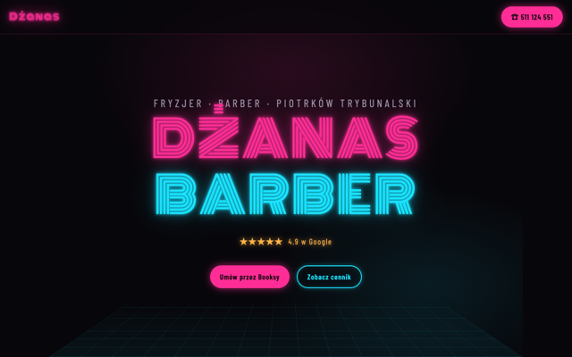
site-1 Ciemny neonDżanas Fryzjer&Barber · Piotrków Tryb.Czarny klub, różowo-cyjanowe neony, flicker szyldu, siatka podłogi jak z klubu bilardowego.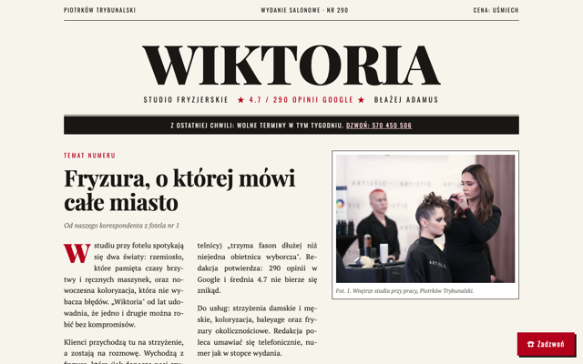
site-2 Gazeta / printStudio „Wiktoria" B. Adamus · Piotrków Tryb.Winieta jak z dziennika, łamy, inicjał, cennik jako ogłoszenia drobne, czerń-kremowy-czerwień.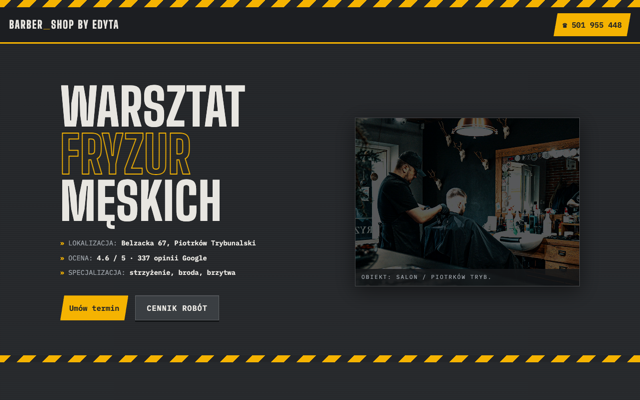
site-3 Industrial / warsztatBarber Shop by Edyta · Piotrków Tryb.Pasy ostrzegawcze, tabliczki znamionowe z nitami, mono-font, żółć bezpieczeństwa na graficie.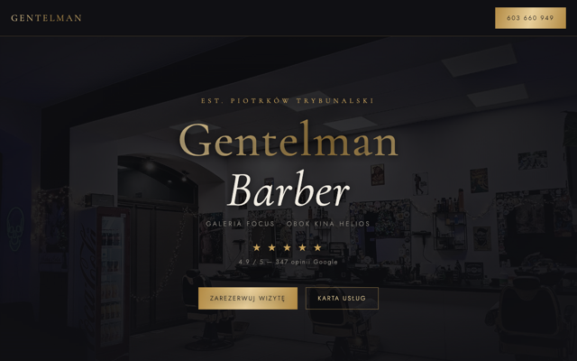
site-4 Luksus / glamourGentelman Barber · Piotrków Tryb.Grafit + płynne złoto, serif Cormorant, karta usług z dot-leaderami, pełnoekranowe zdjęcie za winietą.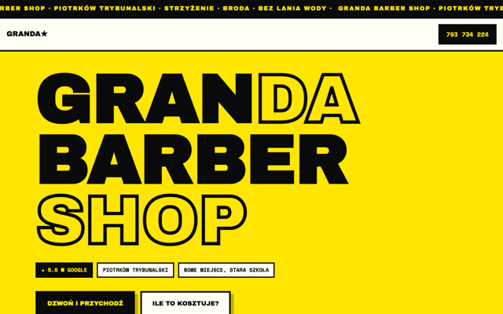
site-5 BrutalizmGRANDA BARBER SHOP · Piotrków Tryb.Żółć/czerń, twarde 4px ramki, marquee, tabela jak z PRL-owskiego cennika, zero zaokrągleń.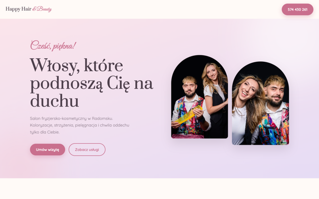
site-6 Pastelowy feminineHappy Hair and Beauty · RadomskoRóż + lawenda, łuki (arch) na zdjęciach, script font na akcentach, miękkie cienie i blob-y.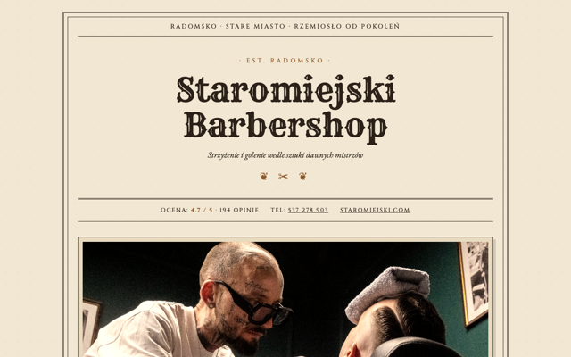
site-7 Vintage / wiktoriańskiStaromiejski Barbershop · RadomskoPodwójne ramki, papier z fakturą, ornamenty ❦✂, rejestr usług z numeracją rzymską, sepia na zdjęciach.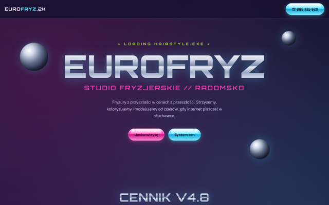
site-8 Y2K chromeStudio EuroFryz · RadomskoChromowany logotyp, kule 3D, przyciski aqua, płyty CD jako "hity", okna systemowe z opiniami.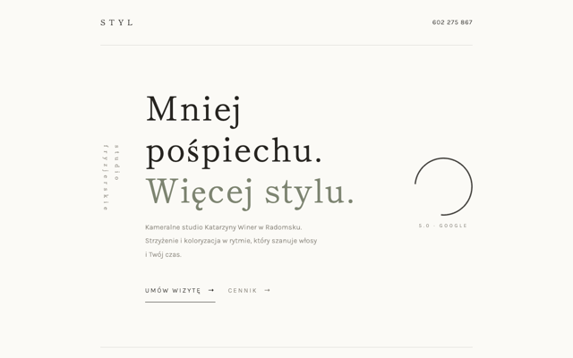
site-9 Zen / japoński minimalStudio STYL K. Winer · RadomskoEnso, pion tekstu, numeracja 一二三四, ogrom światła, cienkie linie, matcha na bieli.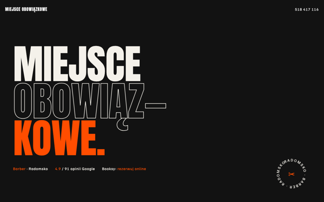
site-10 Kinetyczna typografiaMiejsce Obowiązkowe · RadomskoWielkie Antony wjeżdżające z boków, pasek marquee, kręcący się badge, acid orange na czerni.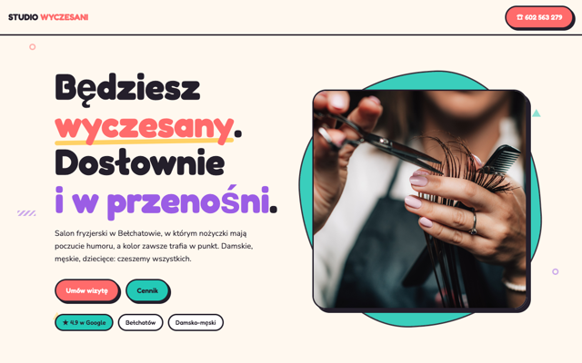
site-11 Neo-MemphisSTUDIO WYCZESANI · BełchatówKonfetti geometryczne, grube obrysy, hard-shadow, dymki komiksowe, kolory jak z lat 80/90.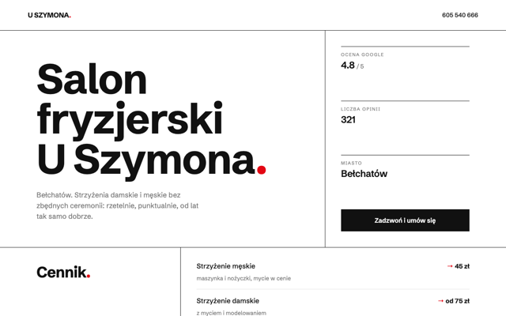
site-12 Szwajcarski minimalSalon U Szymona · BełchatówSiatka z liniami, gigantyczny grotesk, czerwona kropka, fakty w kolumnie, zero dekoracji.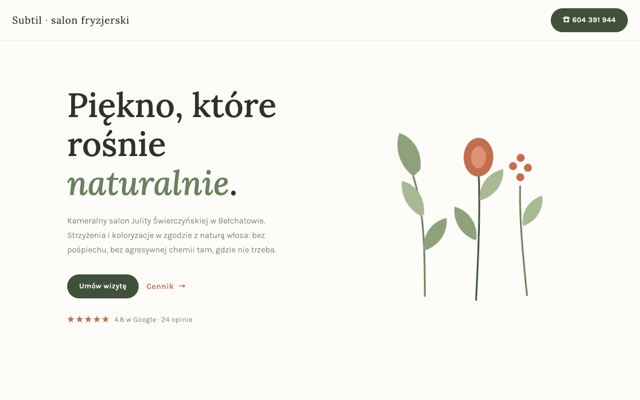
site-13 Botaniczny / organicznySalon „Subtil" J. Świerczyńska · BełchatówRysowane SVG bukiety kołyszące się na wietrze, szałwia + terakota, blob-cytat, listki przy cenniku.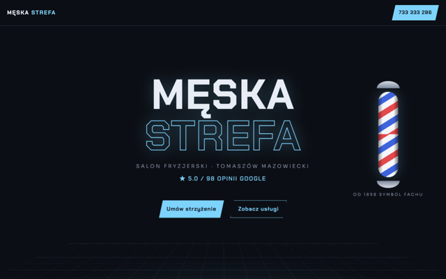
site-14 3D immersiveMęska Strefa · Tomaszów Maz.Scena 3D z parallaxem za kursorem, animowany słupek barberski, panele odchylające się w hoverze.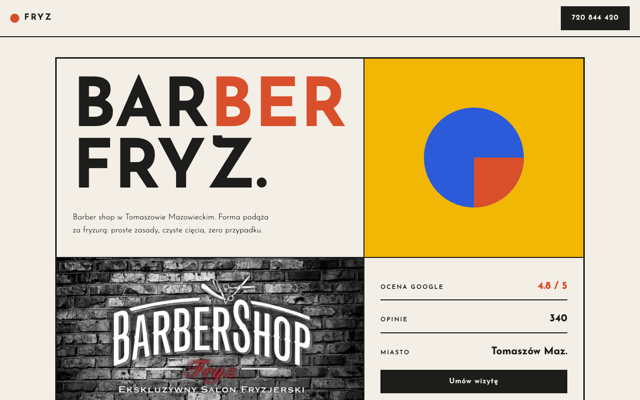
site-15 BauhausBarber Shop FRYZ · Tomaszów Maz.Kompozycja modularna w ramach, kolory podstawowe, koło/kwadrat/trójkąt jako system oznaczeń.